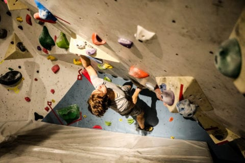
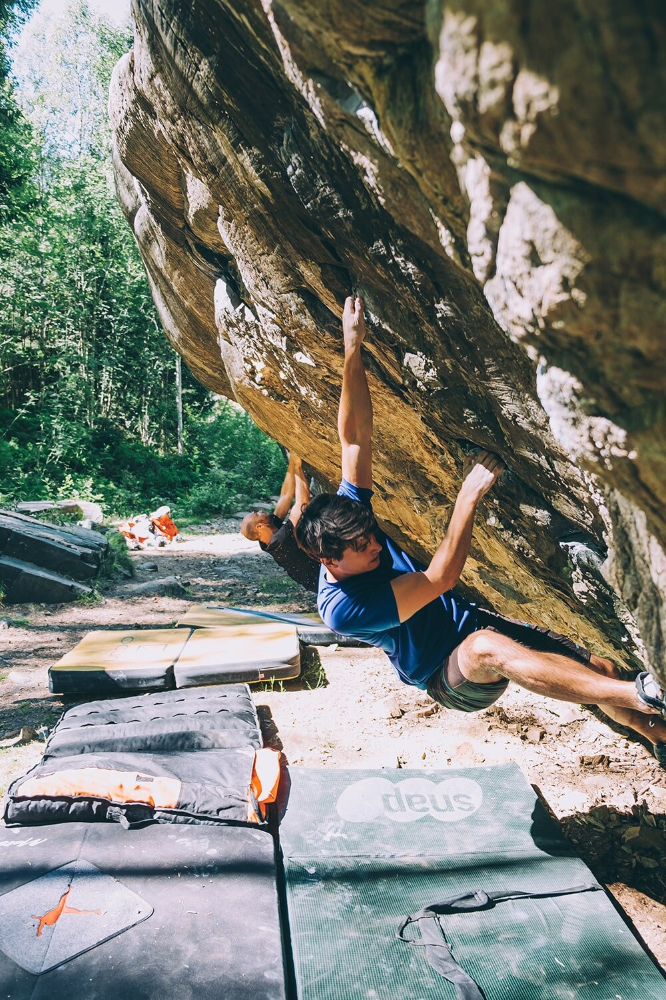
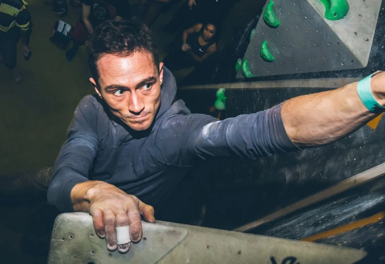
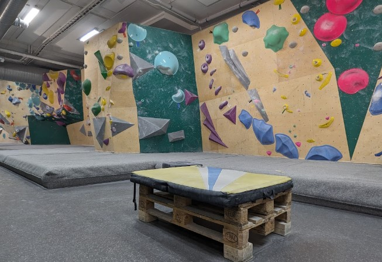
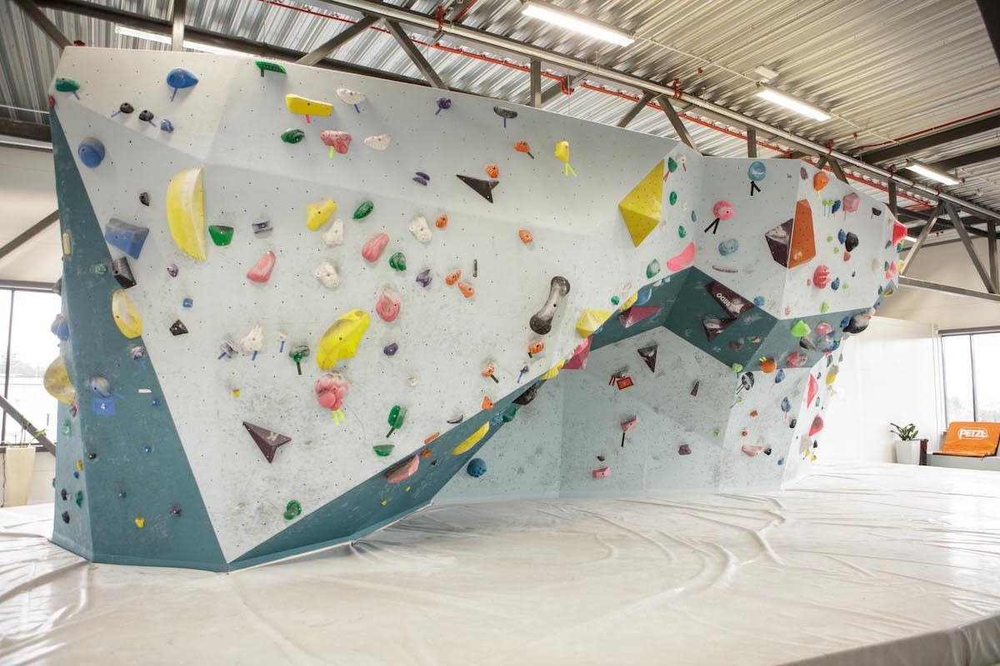
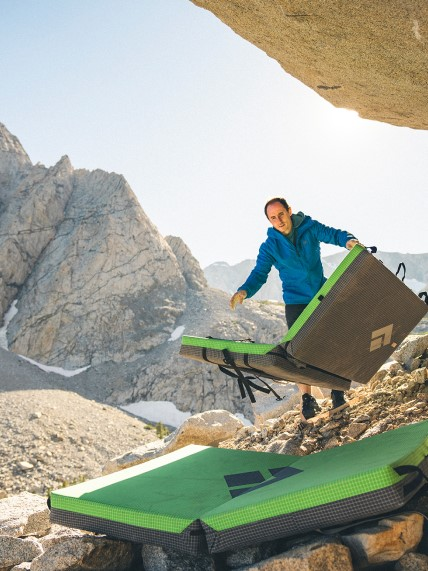
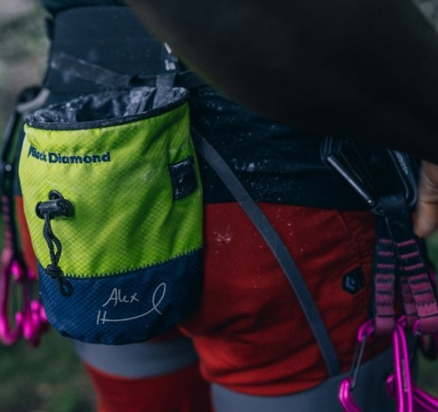

Bouldering Oslo
Bouldering is the purest form of climbing-a captivating blend of
strenght, intuition, and movement. With no ropes, climbers face the
raw essence of rock, trusting only in their skill and focus. Each
route, or "problem," becomes a mystery to unravel, offering a
journey that's both physical and profoundly meditative.


Indoor bouldering
Indoor bouldering is an exploration of crafted stone, where climbers
seek the rhythm hidden in each handhold and foothold. Under colorful
walls and quiet focus, it's a journey inward, testing strength,
creativity, and flow. Each route becomesa story, inviting climbers
to unlock secrets held within the contours of the climb.

Gyms in Oslo
Klatreverket Løkka
One of the most populare bouldering gyms in Oslo, located within the
city center. Features a wide range of bouldering problems, ideal for
all skill levels. Its spacious layout and community vibe make it a
great choice for climbers looking for variety and a welcoming
atmosphere.
Address:
Thorvald Meyers gate 9, 0555 Oslo


Oslo klatresenter
The biggest climbing gym in Oslo, located just a short distance from
the city center. The gym's central location and vibrant atmosphere
make it a popular destination for both locals and visitors looking
to enjoy top-tier bouldering in Oslo.
Address:
Olaf Helsets vei 5, 0694 Oslo
Vulkan klatresenter
In the trendy Vulkan area, this gym offers an excellent range of
bouldering problems and modern facilities. Vulkan Klatresenter is
perfect for climbers seeking both quality and a vibrant, urban
setting
Address:
Vulkan 13, 0178 Oslo
Grading
Bouldering grades are used to indicate the difficulty of climbing
problems, helping climbers gauge which routes match their skill level
and track their progress. These grading systems consider factors like
strength, technique, balance, and problem-solving required for a
climb. Bouldering uses two main grading systems to indicate
difficulty: the Color Grading System and the V-Grading System.
Color grading
In gyms, the Color Grading System often uses tape or holds of
specific colors to represent difficulty levels, typically
progressing from easy (e.g., white or yellow) to very hard (e.g.,
black or red). In Oslo we use the grading system shown in the table
below.
V-grading
This system varies by gym. The V-Grading System is used worldwide,
especially outdoors. Starting at V0 for beginners, it increases with
difficulty (V1, V2, etc.), with the hardest climbs currently
reaching V17. Each "V" grade reflects a notable step up in
technical, physical, and mental challenges.
| Color grading |
| Beginner |
Easy |
Intermediate |
Hard |
Advanced |
Pro |
| V grading |
| VB |
V0+ |
V4 |
V8 |
V12 |
V15 |
| V0- |
V1 |
V5 |
V9 |
V13 |
V16 |
| V0 |
V2 |
V6 |
V10 |
V14 |
V17 |
|
V3* |
V7* |
V11* |
* Grades that would fit inbetween the current and next color grade.
Outdoor bouldering
Outdoor bouldering is the art of climbing untamed rock, a dance with
nature's raw edges. Without ropes, climbers embrace each unique
boulder "problem", drawing on instinct, strength, and flow. It's a
powerful, grounding pursuit—an invitation to connect with the earth
and unlock its hidden paths through pure movement.
Equipment
Proper equipment is crucial in bouldering, enhancing both safety and
performance. It supports climbers in maintaining grip, stability, and
confidence on challenging routes, allowing them to focus fully on
technique and progression. Quality gear minimizes risks and maximizes
the enjoyment and freedom of each climb.
Climbing shoes

Climbing shoes are essential for providing precise footwork,
support, and grip on challenging surfaces. They enhance performance,
ensuring better control and comfort while tackling different types
of climbs and terrain.
Crash pads

Bouldering mats, or crash pads, are crucial for outdoor climbing,
providing safety by cushioning falls. They protect climbers from
injury, offering peace of mind and allowing focus on the climb
itself.
Chalk & chalk bag

Chalk and chalk bags are essential for climbers, helping to keep
hands dry and improve grip. Chalk absorbs sweat, reducing slippage,
while the bag provides easy access during climbs, ensuring
consistent performance.